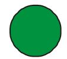

<!DOCTYPE html>
<html>
<head>
	<meta charset="UTF-8">
	<link href="../css/style_mock.css" rel="stylesheet" />
</head>
 <body>
<script type="text/javascript" src="../../mock_code.js"></script>
<script>

//todo - Read question from notepad
var questions = [
["Which of these is a Square?"," 5 more join them. <BR> How many kids in the bus ?","6","9","8","10","B"],
["Ridz made 10 sandwitches. <BR> She ate 3. <BR>How many are left?","10","4","7","3","C"],
["32 = ____ tens and ____ones","3 and 3","2 and 3","3 and 2", "3 and 0","C"],
["8 tens and 2 ones = ____","80","20","82","22","C"], 
["Increasing Order <BR> 29 , 67 , 6 , 22", "67 < 29 < 22 < 6", "67 > 29 > 22 > 6", "6 < 22 < 29 < 67",  "6 > 22 > 29 > 67" , "D"],
["Decreasing Order <BR> 7 , 77 , 2 , 22 , 5 ", "77 < 2 < 22 < 7 < 5 ", "77 < 7 < 22 < 2 < 5 ",  "77 < 22 < 7 < 5 < 2 ", "77 > 22 > 7 > 5 > 2 ", "D"],
[" ___+ 9 = 11","0","2","4","6","B"],

]


</script>
<table><tr>
  <td class="timer-pic"></td><td class="timer-text"><p id="demo" ></p></td> 
</tr>
</table>
<h2 id="test_status"></h2>
<div id="test"></div>
</body>
</html>
